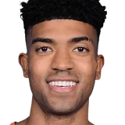

His best final NBA finish was #8 of 30, with the 2020-21 Denver Nuggets. In his 183 games for 7 teams over 7 seasons they went 67–116 (36.6%), −49 games under .500, with an average final finish of 21.9.
Jump to: Record by opponent · Season by season · Teammate help
Compare Shaquille Harrison with…
Final NBA finish, season by season
Title Finals Other playoffs Missed playoffs. #1 = champion; the dashed line is last place that season. Each point opens that season's final standings.
All 30 teams ranked in 2020-21, his best finish (#8)Teammate help
 Nikola Jokic11.01 season
Nikola Jokic11.01 season James Harden1.01 season
James Harden1.01 season Josh Jackson0.11 season
Josh Jackson0.11 season
Seasons with help 0.1 to 0.2 (3): best finish #24 of 30, 2023-24, worst #30 of 30, 2017-18.
Career
Career records (W–L, W − L, with and without) include 2026-27 games through Nov. 21, 2026; season counts and finishes are through 2025-26. Each card opens its board in the same scope. How we count.

With and without his teammates
His 12 teammates with the most regular-season games together. "Together" is the team's record in the games both played for it; "Without him" is the team's record in the games Shaquille Harrison played for that team while the teammate was on it (between the teammate's first and last game for the team, the appearance span) and the teammate did not play. Fewer than 20 games without him: no gap. Games through Nov. 21, 2026. How we count.
 Ryan Arcidiacono
Ryan Arcidiacono Chicago 2018-19 to 2019-20
Chicago 2018-19 to 2019-20- Together
- 33–78 29.7%
- Without him
- 0–2 0.0%
- Gap
- Too few games without him
 Zach LaVineChicago 2018-19 to 2019-20
Zach LaVineChicago 2018-19 to 2019-20- Together
- 26–66 28.3%
- Without him
- 4–5 44.4%
- Gap
- Too few games without him
 Lauri MarkkanenChicago 2018-19 to 2019-20
Lauri MarkkanenChicago 2018-19 to 2019-20- Together
- 28–55 33.7%
- Without him
- 2–10 16.7%
- Gap
- Too few games without him

- Together
- 25–49 33.8%
- Without him
- 5–15 25.0%
- Gap
- 8.8 points lower
 Cristiano FelicioChicago 2018-19 to 2019-20
Cristiano FelicioChicago 2018-19 to 2019-20- Together
- 17–54 23.9%
- Without him
- 7–13 35.0%
- Gap
- 11.1 points higher
 Robin LopezChicago 2018-19
Robin LopezChicago 2018-19- Together
- 19–49 27.9%
- Without him
- 1–4 20.0%
- Gap
- Too few games without him
 Wendell Carter JrChicago 2018-19 to 2019-20
Wendell Carter JrChicago 2018-19 to 2019-20- Together
- 19–44 30.2%
- Without him
- 3–12 20.0%
- Gap
- Too few games without him

Chandler HutchisonChicago 2018-19 to 2019-20- Together
- 12–42 22.2%
- Without him
- 7–9 43.8%
- Gap
- Too few games without him
- Antonio BlakeneyChicago 2018-19
- Together
- 12–36 25.0%
- Without him
- 8–17 32.0%
- Gap
- 7.0 points higher
 Coby WhiteChicago 2019-20
Coby WhiteChicago 2019-20- Together
- 14–29 32.6%
- Without him
- N/A N/A
- Gap
- Too few games without him
 Tomas SatoranskyChicago 2019-20
Tomas SatoranskyChicago 2019-20- Together
- 14–29 32.6%
- Without him
- N/A N/A
- Gap
- Too few games without him
 Wayne SeldenChicago 2018-19
Wayne SeldenChicago 2018-19- Together
- 12–31 27.9%
- Without him
- N/A N/A
- Gap
- Too few games without him
Latest completed seasons
Season by season
Newest first; every header sorts. Final NBA finish is the team's rank among all teams that season (#1 = champion) and opens that season's standings. "Without him" uses the team-season window; the span line counts only the games between his first and last game for the team.
| 2023-24 | #24 of 30 | 27–55 32.9% | Missed playoffs | 3 of 82 | 1–2 33.3% | 26–53 32.9%span: 1–0, gap −66.7 | +0.4 | |
| 2022-23 | #26 of 30 | 33–49 40.2% | Missed playoffs | 5 of 82 | 1–4 20.0% | 32–45 41.6%span: N/A, gap N/A | −21.6 | |
| 2021-22 | #14 of 30 | 44–38 53.7% | Lost 1st round 0–4 | 2 of 82 | 1–1 50.0% | 43–37 53.8%span: 1–0, gap −50.0 | −3.7 | |
| 2020-21 | #5 of 30 | 52–20 72.2% | Lost conf semis 2–4 | 17 of 72 | 15–2 88.2% | 26–12 68.4%span: 10–4, gap +16.8 | +19.8 | |
| 2020-21 | #8 of 30 | 47–25 65.3% | Lost conf semis 0–4 | 17 of 72 | 12–5 70.6% | 19–6 76.0%span: N/A, gap N/A | −5.4 | |
| 2019-20 | #24 of 30 | 22–43 33.8% | Missed playoffs | 43 of 65 | 14–29 32.6% | 8–14 36.4%span: 8–13, gap −5.5 | −3.8 | |
| 2018-19 | #27 of 30 | 22–60 26.8% | Missed playoffs | 73 of 82 | 20–53 27.4% | 2–7 22.2%span: 1–4, gap +7.4 | +5.2 | |
| 2017-18 | #30 of 30 | 21–61 25.6% | Missed playoffs | 23 of 82 | 3–20 13.0% | 18–41 30.5%span: N/A, gap N/A | −17.5 |
On/off, starts and close games
From the lineup data, 1996-97 on. On/off is net points per 100 possessions with him on the floor minus off, a different unit from the win-rate gaps. Started and off the bench are team records in those games; close games are those within 5 points in the last 5 minutes with him on the floor.
| 2023-24 | −68.3 | N/A | 1–2 33.3% | N/A | |
| 2022-23 | +14.7 | N/A | 1–4 20.0% | N/A | |
| 2021-22 | −22.7 | N/A | 1–1 50.0% | N/A | |
| 2020-21 | −64.2 | N/A | 15–2 88.2% | N/A | |
| 2020-21 | −10.1 | N/A | 12–5 70.6% | 2–1 66.7% | |
| 2019-20 | +12.3 | 4–6 40.0% | 10–23 30.3% | 2–6 25.0% | |
| 2018-19 | −1.8 | 3–8 27.3% | 17–45 27.4% | 4–8 33.3% | |
| 2017-18 | +26.0 | 1–1 50.0% | 2–19 9.5% | 2–5 28.6% |
Teammate help by season
Two separate numbers per season, each with every teammate that adds to it. Help this season = Teammates Score points for honors won that season by teammates who shared a game with him. Help coming in = the same teammates' honors from the season before. How help works.
- 2023-24
 Memphis
Memphis
 GG Jackson All-Rookie 2nd0.1251 g
GG Jackson All-Rookie 2nd0.1251 g
Help this season: 0.125 = 0.125 GG Jackson
More: help coming in and other teammates
Help coming in (teammates' honors the season before): 5 = 5 Jaren Jackson Jr
Other teammates (no honors that season): Bismack Biyombo 3 g, Derrick Rose 3 g, Jacob Gilyard 3 g, Kenneth Lofton 3 g, Vince Williams Jr 3 g, David Roddy 3 g, Santiago Aldama 3 g, Ziaire Williams 3 g, Desmond Bane 3 g, John Konchar 3 g, Jaylen Nowell 3 g, Jaren Jackson Jr 3 g, Xavier Tillman 1 g
- 2022-23
 PortlandHelp this season: 0, no honored teammate
PortlandHelp this season: 0, no honored teammateMore: help coming in
Help coming in (teammates' honors the season before): 0.5 = 0.5 Matisse Thybulle
- 2021-22
 Brooklyn
James Harden All-Star11 g
Brooklyn
James Harden All-Star11 g
Help this season: 1 = 1 James Harden
More: help coming in and other teammates
Help coming in (teammates' honors the season before): 1 = 1 James Harden
Other teammates (no honors that season): Langston Galloway 2 g, James Ennis 2 g, Patrick Mills 2 g, Blake Griffin 2 g, James Johnson 1 g, Paul Millsap 1 g, David Duke 1 g, Cam Thomas 1 g, Kessler Edwards 1 g, Nicolas Claxton 1 g, Wenyen Gabriel 1 g, Jevon Carter 1 g, Bruce Brown 1 g, DeAndre Bembry 1 g
- 2020-21
 Utah
Utah
 Rudy Gobert DPOYAll-NBA 3rdAll-StarAll-Def 1st717 g
Rudy Gobert DPOYAll-NBA 3rdAll-StarAll-Def 1st717 g Donovan Mitchell All-Star115 g
Donovan Mitchell All-Star115 g Mike Conley All-Star115 g
Mike Conley All-Star115 g Jordan Clarkson Sixth Man0.517 g
Jordan Clarkson Sixth Man0.517 g
Help this season: 9.5 = 7 Rudy Gobert + 1 Donovan Mitchell + 1 Mike Conley + 0.5 Jordan Clarkson
More: help coming in and other teammates
Help coming in (teammates' honors the season before): 5 = 4 Rudy Gobert + 1 Donovan Mitchell
Other teammates (no honors that season): Bojan Bogdanovic 17 g, Miye Oni 17 g, Georges Niang 17 g, Royce O'Neale 17 g, Derrick Favors 15 g, Joe Ingles 14 g, Juwan Morgan 12 g, Udoka Azubuike 12 g, Jarrell Brantley 8 g, Elijah Hughes 6 g, Trent Forrest 5 g
- 2020-21
 Denver
Nikola Jokic MVPAll-NBA 1stAll-Star1117 g
Denver
Nikola Jokic MVPAll-NBA 1stAll-Star1117 g
Help this season: 11 = 11 Nikola Jokic
More: help coming in and other teammates
Help coming in (teammates' honors the season before): 4 = 4 Nikola Jokic
Other teammates (no honors that season): JaMychal Green 16 g, Facundo Campazzo 16 g, Michael Porter 16 g, Aaron Gordon 15 g, Austin Rivers 15 g, Paul Millsap 13 g, Vlatko Cancar 12 g, Markus Howard 11 g, PJ Dozier 10 g, JaVale McGee 9 g, Bol Bol 9 g, Zeke Nnaji 7 g, Will Barton 4 g, Monte Morris 4 g
- 2019-20Chicago
Coby White All-Rookie 2nd0.12543 g
Help this season: 0.125 = 0.125 Coby White
More: help coming in and other teammates
Help coming in (teammates' honors the season before): 0
Other teammates (no honors that season): Tomas Satoransky 43 g, Thaddeus Young 42 g, Zach LaVine 38 g, Ryan Arcidiacono 38 g, Daniel Gafford 31 g, Lauri Markkanen 31 g, Kris Dunn 29 g, Wendell Carter Jr 28 g, Denzel Valentine 26 g, Luke Kornet 23 g, Chandler Hutchison 18 g, Cristiano Felicio 17 g, Adam Mokoka 11 g, Otto Porter 10 g and 1 more
- 2018-19ChicagoHelp this season: 0, no honored teammate
More: help coming in
Help coming in (teammates' honors the season before): 0.25 = 0.25 Lauri Markkanen
- 2017-18
 Phoenix
Josh Jackson All-Rookie 2nd0.12520 g
Phoenix
Josh Jackson All-Rookie 2nd0.12520 g
Help this season: 0.125 = 0.125 Josh Jackson
More: help coming in and other teammates
Help coming in (teammates' honors the season before): 0.125 = 0.125 Marquese Chriss
Other teammates (no honors that season): Dragan Bender 23 g, Marquese Chriss 21 g, Troy Daniels 20 g, Alex Len 20 g, Elfrid Payton 16 g, Jared Dudley 16 g, Tyler Ulis 15 g, Davon Reed 14 g, Alec Peters 11 g, Devin Booker 10 g, TJ Warren 9 g, Danuel House 7 g, Alan Williams 5 g, Tyson Chandler 4 g
Record against each opponent
Regular season, through 2025-26 (2026-27 games not included): 183 games, 67–116, against 29 franchises.
Grouped by franchise (named as today); game lists keep each team's name that season. Filters and the tab are kept in the URL, so a filtered view can be shared.
| Games list | |||||||
|---|---|---|---|---|---|---|---|
| 10 | 7–3 | 70.0% | +4 | N/A | 2017-18 to 2020-21 | ||
| 9 | 6–3 | 66.7% | +3 | N/A | 2017-18 to 2020-21 | ||
| 9 | 1–8 | 11.1% | −7 | 1–0 (2–2 in games) | 2017-18 to 2020-21 | ||
| 9 | 4–5 | 44.4% | −1 | N/A | 2017-18 to 2022-23 | ||
| 8 | 1–7 | 12.5% | −6 | N/A | 2018-19 to 2020-21 | ||
| 8 | 1–7 | 12.5% | −6 | N/A | 2018-19 to 2020-21 | ||
| 8 | 3–5 | 37.5% | −2 | N/A | 2017-18 to 2020-21 | ||
| 8 | 1–7 | 12.5% | −6 | N/A | 2018-19 to 2020-21 | ||
| 8 | 6–2 | 75.0% | +4 | N/A | 2018-19 to 2019-20 | ||
| 7 | 3–4 | 42.9% | −1 | N/A | 2017-18 to 2020-21 | ||
| 7 | 5–2 | 71.4% | +3 | N/A | 2017-18 to 2023-24 | ||
| 7 | 6–1 | 85.7% | +5 | 1–0 (1–2 in games) | 2017-18 to 2022-23 | ||
| 7 | 2–5 | 28.6% | −3 | N/A | 2017-18 to 2020-21 | ||
| 7 | 2–5 | 28.6% | −3 | 1–0 (4–1 in games) | 2017-18 to 2020-21 | ||
| 6 | 2–4 | 33.3% | −2 | N/A | 2017-18 to 2020-21 | ||
| 6 | 2–4 | 33.3% | −2 | N/A | 2018-19 to 2023-24 | ||
| 6 | 3–3 | 50.0% | 0 | N/A | 2018-19 to 2020-21 | ||
| 6 | 2–4 | 33.3% | −2 | N/A | 2017-18 to 2021-22 | ||
| 5 | 1–4 | 20.0% | −3 | N/A | 2017-18 to 2019-20 | ||
| 5 | 0–5 | 0.0% | −5 | N/A | 2018-19 to 2019-20 | ||
| 5 | 1–4 | 20.0% | −3 | N/A | 2017-18 to 2019-20 | ||
| 5 | 1–4 | 20.0% | −3 | N/A | 2017-18 to 2022-23 | ||
| 5 | 0–5 | 0.0% | −5 | N/A | 2017-18 to 2020-21 | ||
| 4 | 2–2 | 50.0% | 0 | N/A | 2017-18 to 2020-21 | ||
| 4 | 0–4 | 0.0% | −4 | N/A | 2018-19 to 2020-21 | ||
| 4 | 1–3 | 25.0% | −2 | N/A | 2018-19 to 2019-20 | ||
| 4 | 2–2 | 50.0% | 0 | 0–1 (0–4 in games) | 2018-19 to 2023-24 | ||
| 4 | 2–2 | 50.0% | 0 | N/A | 2018-19 to 2022-23 | ||
| 2 | 0–2 | 0.0% | −2 | 0–1 (0–1 in games) | 2018-19 to 2020-21 |
Rows add up to his career record in his games. A playoff series counts when he played in it; early round-robin games show as games only. How we count.
Playoffs, with and without him
Arrival and departure
Team wins per 82 games the season before he arrived vs his first season there, and his last season vs the season after he left. He leaves a team only when his next season with games is for another team (or he never plays again); whole seasons he missed and came back from are one "Missed" row with the team's record without him. Per 82 so short seasons compare fairly. These are team records, not a measure of what he did.
| Left | after 2023-24 | 2023-24: 27–55 27.0 per 82 | 2024-25: 48–34 48.0 per 82 without him | +21.0 wins | |
| Arrived | 2023-24 | 2022-23: 51–31 51.0 per 82 | 2023-24: 27–55 27.0 per 82 | −24.0 wins | |
| Left | after 2022-23 | 2022-23: 33–49 33.0 per 82 | 2023-24: 21–61 21.0 per 82 without him | −12.0 wins | |
| Arrived | 2022-23 | 2021-22: 27–55 27.0 per 82 | 2022-23: 33–49 33.0 per 82 | +6.0 wins | |
| Left | after 2021-22 | 2021-22: 44–38 44.0 per 82 | 2022-23: 45–37 45.0 per 82 without him | +1.0 wins | |
| Arrived | 2021-22 | 2020-21: 48–24 54.7 per 82 | 2021-22: 44–38 44.0 per 82 | −10.7 wins | |
| Left | after 2020-21 | 2020-21: 52–20 59.2 per 82 | 2021-22: 49–33 49.0 per 82 without him | −10.2 wins | |
| Left | after 2020-21 | 2020-21: 47–25 53.5 per 82 | 2021-22: 48–34 48.0 per 82 without him | −5.5 wins | |
| Arrived | 2020-21 | 2019-20: 44–28 50.1 per 82 | 2020-21: 52–20 59.2 per 82 | +9.1 wins | |
| Arrived | 2020-21 | 2019-20: 46–27 51.7 per 82 | 2020-21: 47–25 53.5 per 82 | +1.9 wins | |
| Left | after 2019-20 | 2019-20: 22–43 27.8 per 82 | 2020-21: 31–41 35.3 per 82 without him | +7.6 wins | |
| Arrived | 2018-19 | 2017-18: 27–55 27.0 per 82 | 2018-19: 22–60 22.0 per 82 | −5.0 wins | |
| Left | after 2017-18 | 2017-18: 21–61 21.0 per 82 | 2018-19: 19–63 19.0 per 82 without him | −2.0 wins | |
| Debut | 2017-18 | 2016-17: 24–58 24.0 per 82 | 2017-18: 21–61 21.0 per 82 | −3.0 wins |
Seasons split between teams
Each team's record before his first game for it, inside his window (games with and without him) and after his last game, in the seasons he played for two or more teams.
Best duos
Team record in regular-season games both played, top 10 by win %, at least 50 games together.
- Kris Dunn
25–49 33.8%
- Lauri Markkanen
28–55 33.7%
- Wendell Carter Jr
19–44 30.2%
- Ryan Arcidiacono
33–78 29.7%
- Zach LaVine
26–66 28.3%
- Robin Lopez
19–49 27.9%
- Cristiano Felicio
17–54 23.9%
- Chandler Hutchison 12–42 22.2%